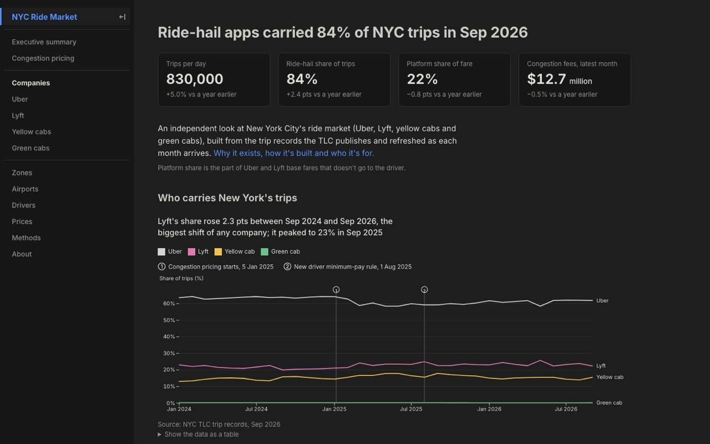

open live ↗Public analytics product
NYC Ride Market
An independent public site profiling New York’s ride market from every trip record the TLC publishes since 2024: who carries the trips, and what congestion pricing and the new driver pay rule changed.
- // 830,000 trips per day, Sep 2026
- // 84% of trips on ride-hail apps
- // weekly Actions refresh behind a validation gate
Python 3.12DuckDB SQLObservable FrameworkGitHub Actions